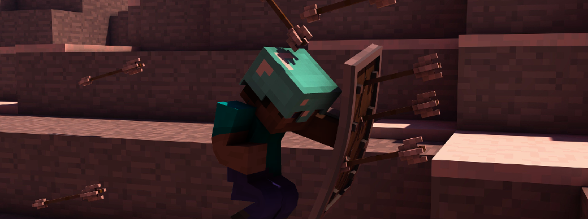

クリーナー「Cleaner」

クリーナーは、BowyersMCの5番目のゲームです。
このモードは唯一のソロモードであり、カルマを稼ぐモードでもあります。
フェーズ
エントリー

エントリーのフェーズです。
エントリールームにて好きなウェポンをセレクターを利用して選択できます。
選べるウェポンは、サプライウェポン以外の開放済みのウェポンに限ります。
また、エントリー時に設定されているウェポンは「お気に入りのウェポン」が設定されます。よく使うウェポンは、お気に入りに設定しておくことをお勧めします。
プリパレ―ション
戦闘準備のフェーズです。
とくに構える必要はありませんが、スポーン地点からランダムに排出されるボットを撃つ準備をしてください。
メインプレイ

メインフェーズです。
排出されるボットは基本的にスティーブのみですが一定確率でイミテイターになります。
すべてのボットは適当に移動をして弓を打ってきます。
一度でもボットの攻撃を食らうと、キル数がマイナスされます。
途中退室もできるので、他のゲームのエントリーが始まった時に退室することも可能です。
カルマはその瞬間分がしっかりと支払われます。
エンド
ゲーム終了のフェーズです。